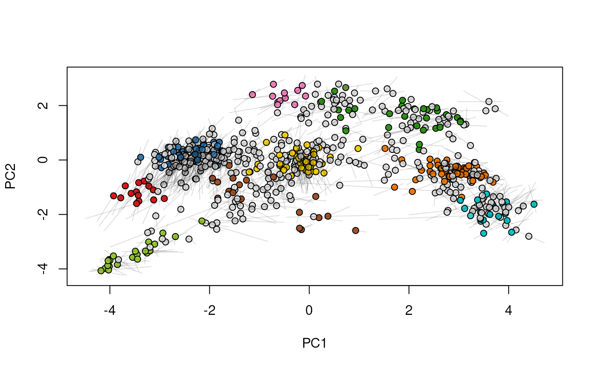
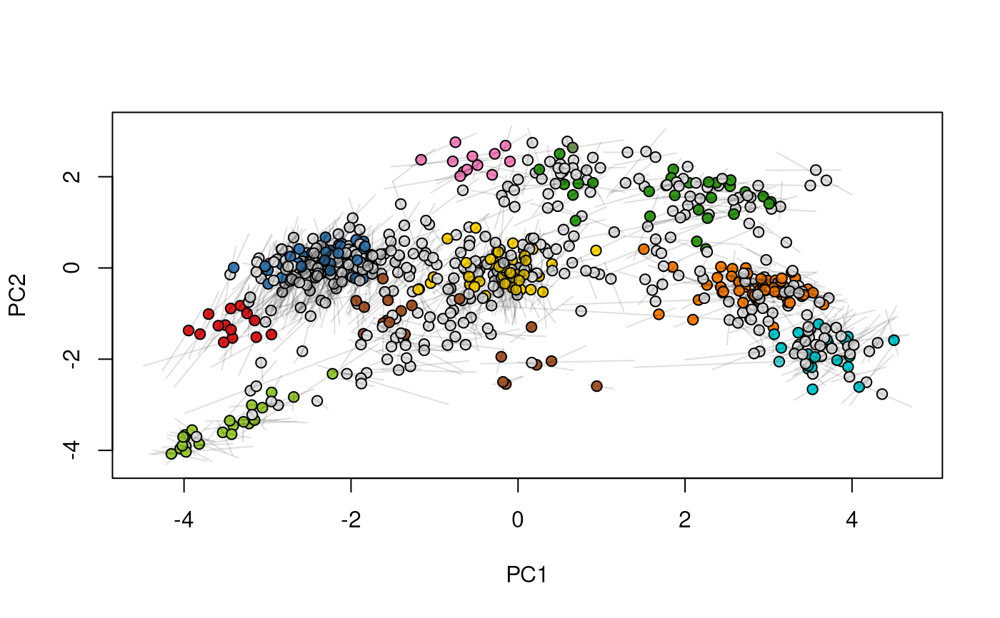
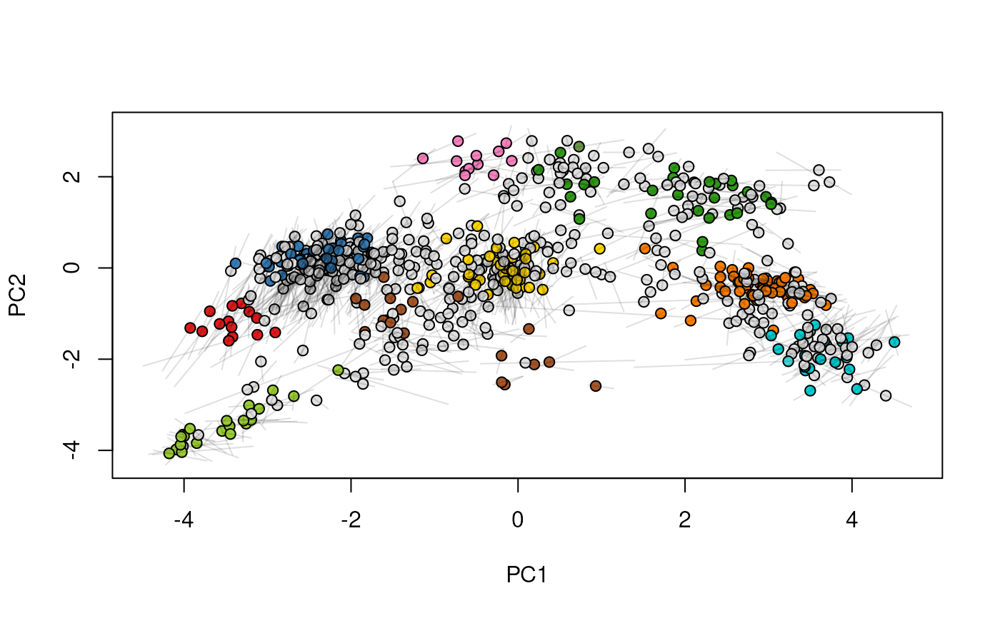
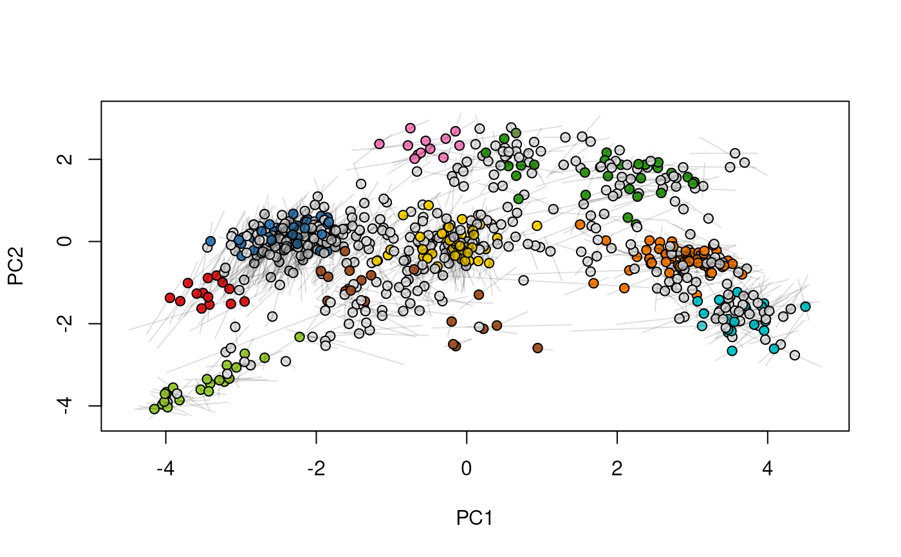
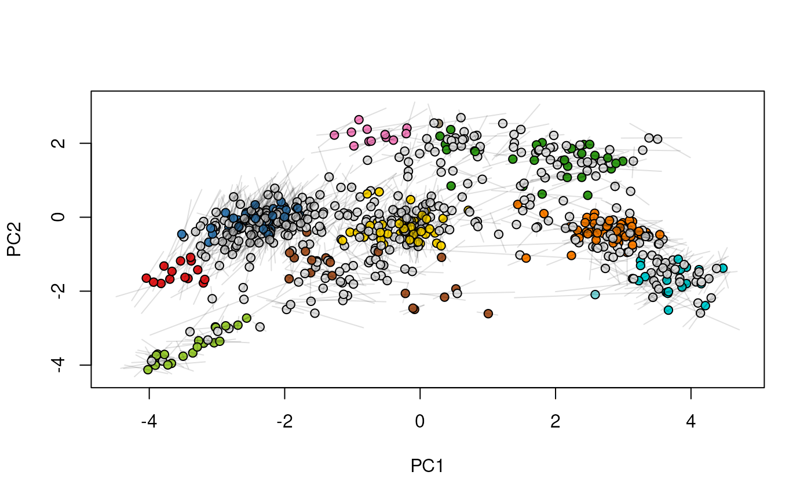
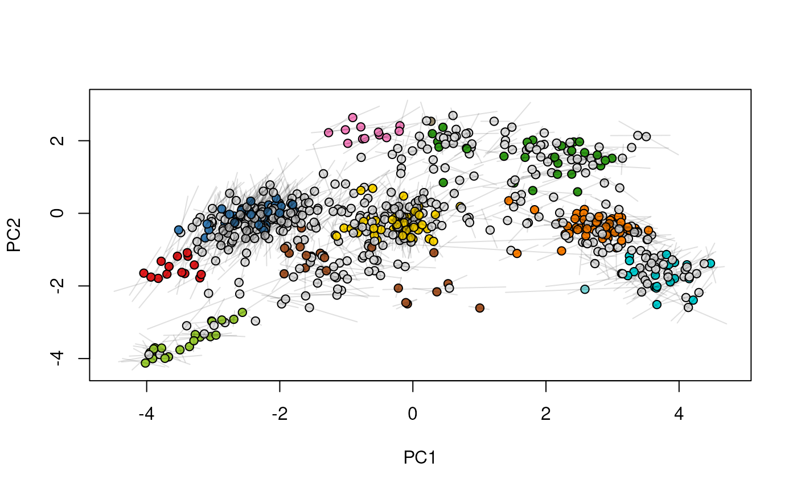
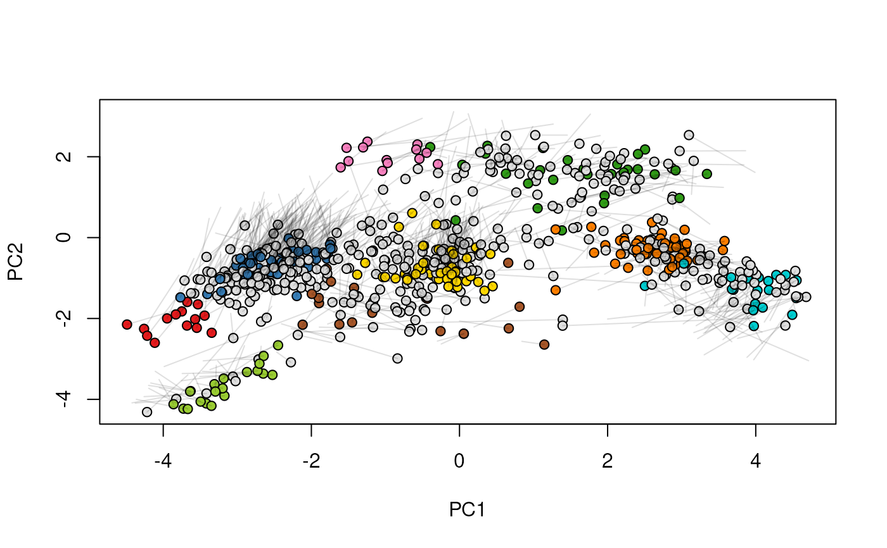
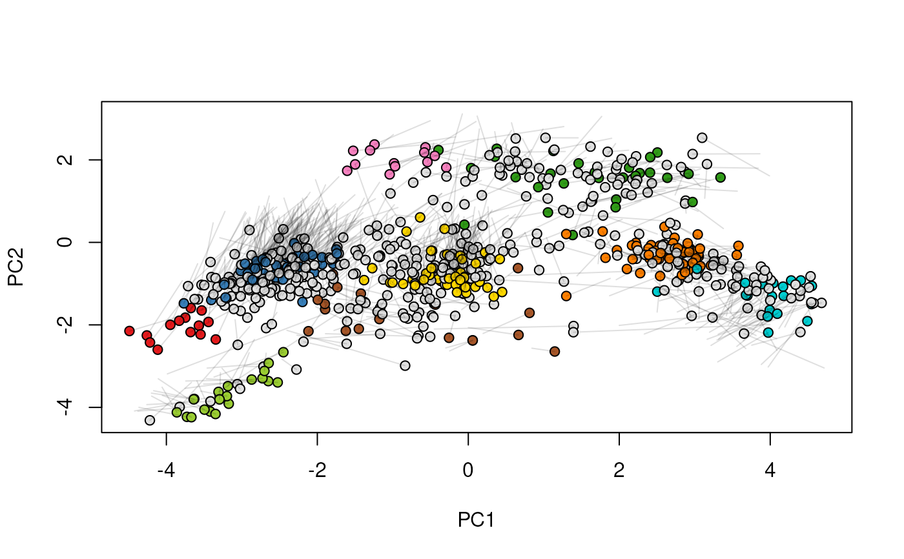
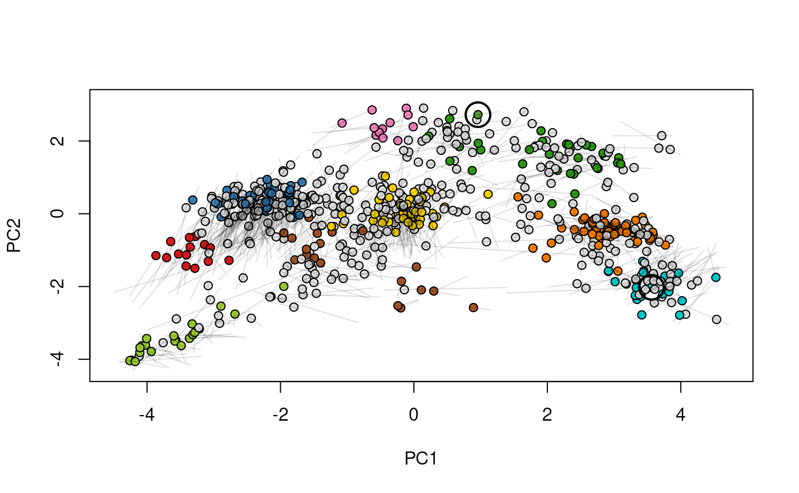
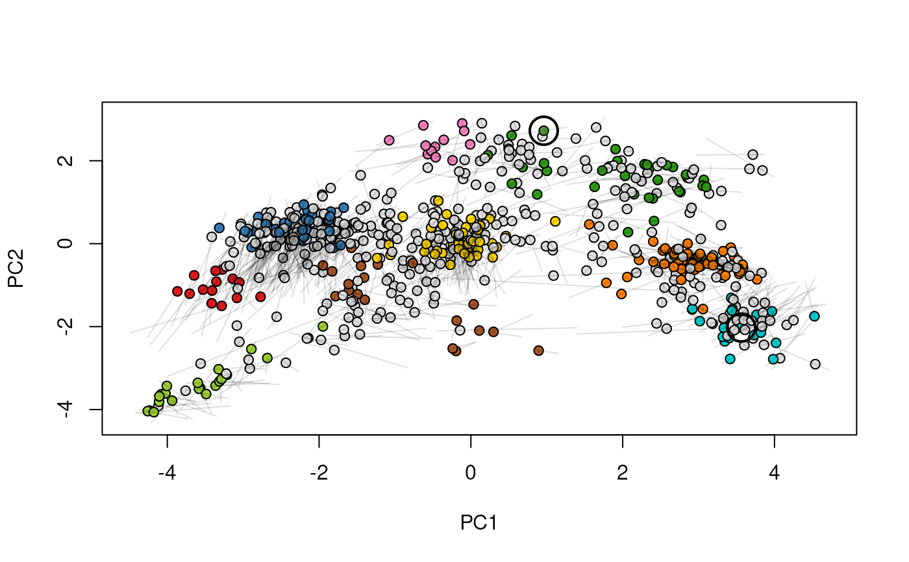

Given two MSnSet instances of one MSnSetList with at
least two items, this function produces an animation that shows
the transition from the first data to the second.
Arguments
- object
An
linkS4class{MSnSet}or aMSnSetList. In the latter case, only the two first elements of the list will be used for plotting and the others will be silently ignored.- pcol
If
objectis anMSnSet, afactoror the name of a phenotype variable (phenoDataslot) defining how to split the singleMSnSetinto two or more data sets. Ignored ifobjectis aMSnSetList.- fcol
Feature meta-data label (fData column name) defining the groups to be differentiated using different colours. Default is
markers. UseNULLto suppress any colouring.- n
Number of frames, Default is 25.
- hl
An optional instance of class
linkS4class{FeaturesOfInterest}to track features of interest.
See also
plot2Ds to a single figure with the two
datasets.
Examples
library("pRolocdata")
data(dunkley2006)
## Create a relevant MSnSetList using the dunkley2006 data
xx <- split(dunkley2006, "replicate")
xx1 <- xx[[1]]
xx2 <- xx[[2]]
fData(xx1)$markers[374] <- "Golgi"
fData(xx2)$markers[412] <- "unknown"
xx@x[[1]] <- xx1
xx@x[[2]] <- xx2
## The features we want to track
foi <- FeaturesOfInterest(description = "test",
fnames = featureNames(xx[[1]])[c(374, 412)])
## (1) visualise each experiment separately
par(mfrow = c(2, 1))
plot2D(xx[[1]], main = "condition A")
highlightOnPlot(xx[[1]], foi)
plot2D(xx[[2]], mirrorY = TRUE, main = "condition B")
highlightOnPlot(xx[[2]], foi, args = list(mirrorY = TRUE))
 ## (2) plot both data on the same plot
par(mfrow = c(1, 1))
tmp <- plot2Ds(xx)
highlightOnPlot(data1(tmp), foi, lwd = 2)
highlightOnPlot(data2(tmp), foi, pch = 5, lwd = 2)
## (2) plot both data on the same plot
par(mfrow = c(1, 1))
tmp <- plot2Ds(xx)
highlightOnPlot(data1(tmp), foi, lwd = 2)
highlightOnPlot(data2(tmp), foi, pch = 5, lwd = 2)
 ## (3) create an animation
move2Ds(xx, pcol = "replicate")
## (3) create an animation
move2Ds(xx, pcol = "replicate")


 




 



 
move2Ds(xx, pcol = "replicate", hl = foi)

move2Ds(xx, pcol = "replicate", hl = foi)
 
